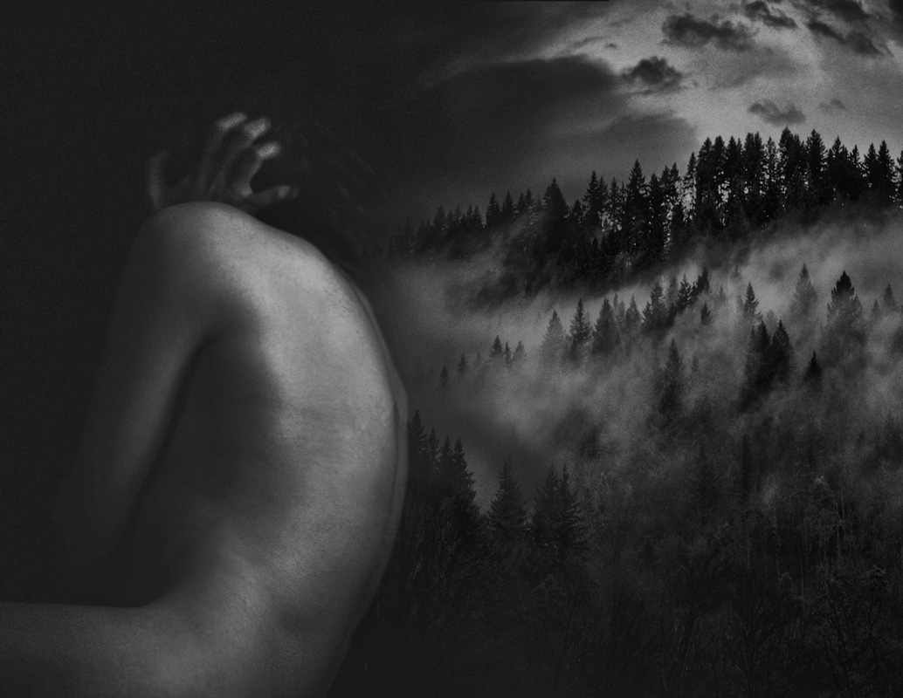
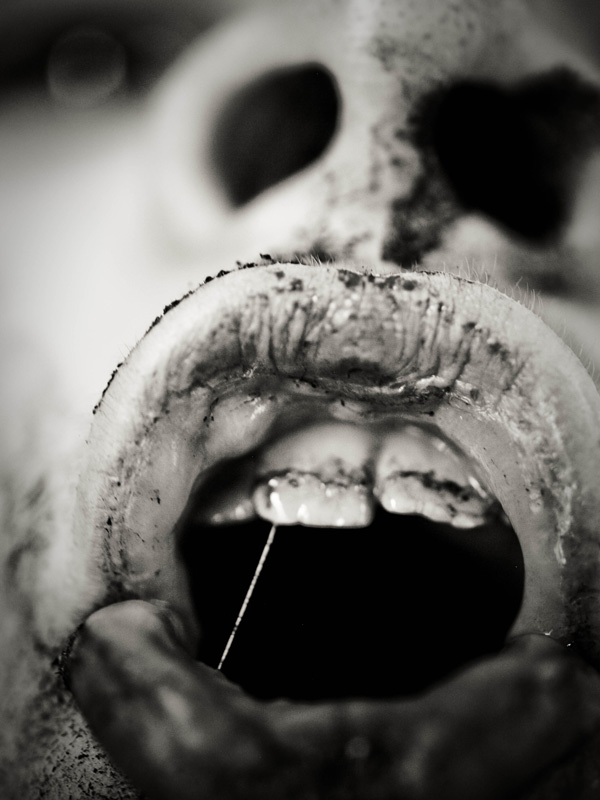
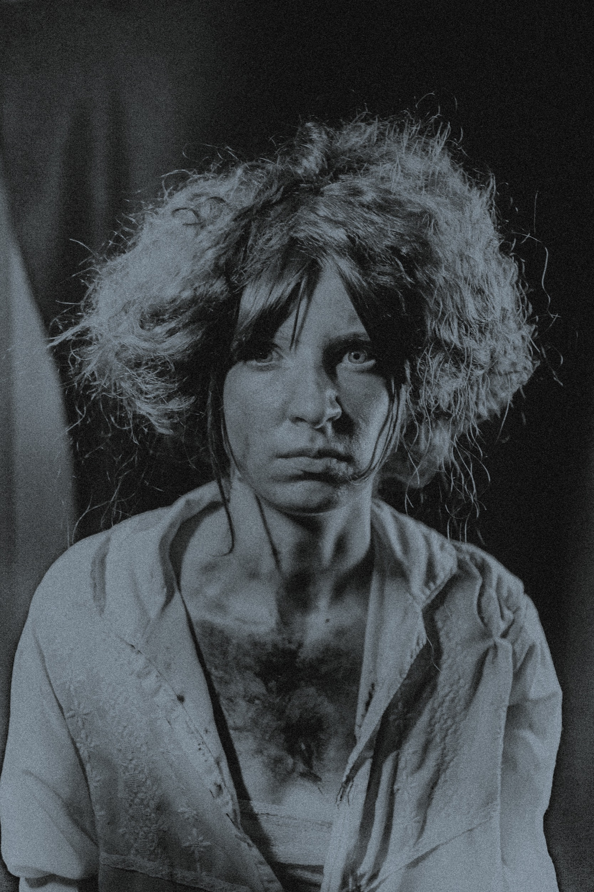
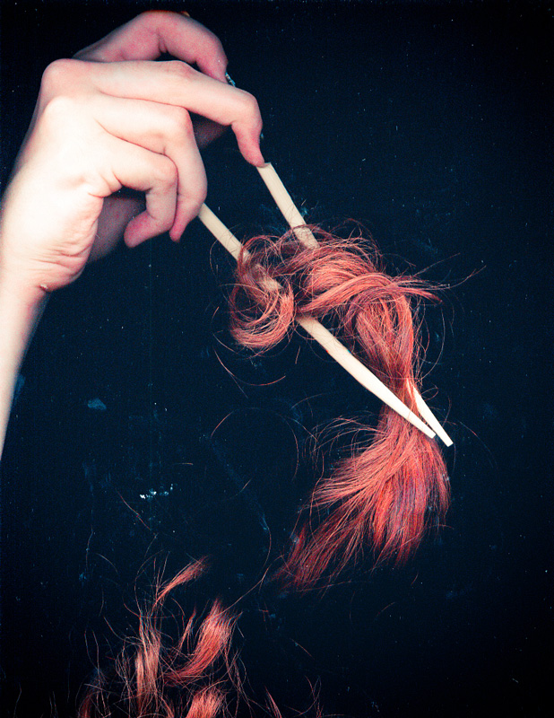
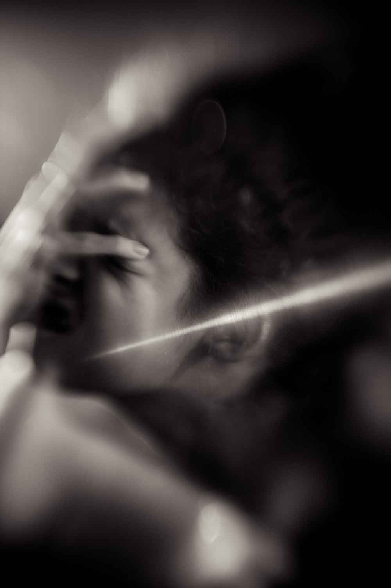
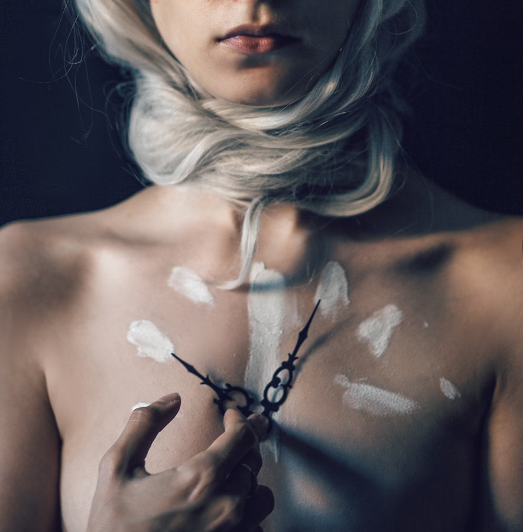
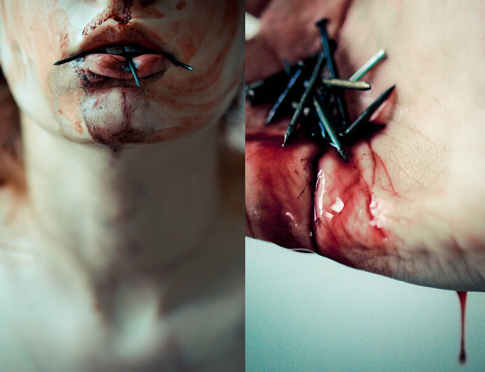
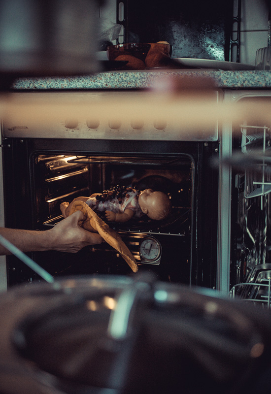
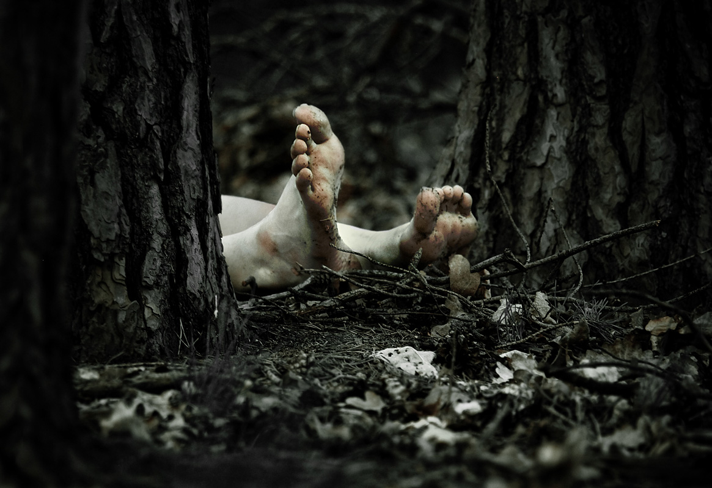
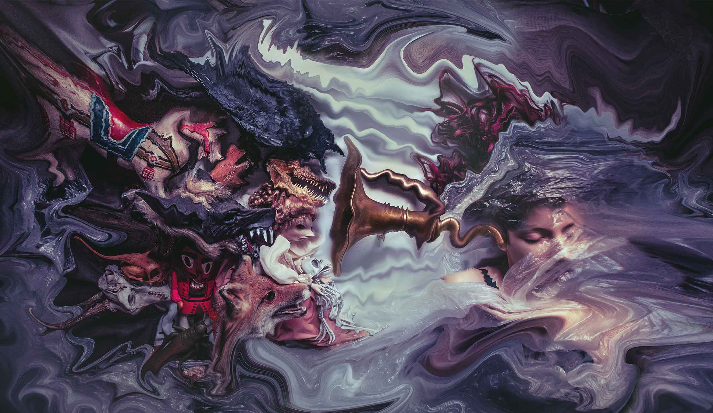

-
Contemplating on Disorders
collected conceptual photography
Darkness is a constant part of human existence. This collection of experimental stand-alone visuals explores every-day distortions and visible elements of mental illness, based on personal experiences and general psychological studies.
2013 - ongoing
-
meta morphing
-

the silence
-

a dark cave
-

afternoon snack
-

curiousity
-

like a mad person
-
and their mad thoughts
-

paranoia
-

her breakfast
-

I'm afraid, doctor
-

those aches
-

clocks are ticking
-

the invention of lies
-

every-day issues
-

cook book fantasy
-

a picnic
-

post traumatic stress disorder